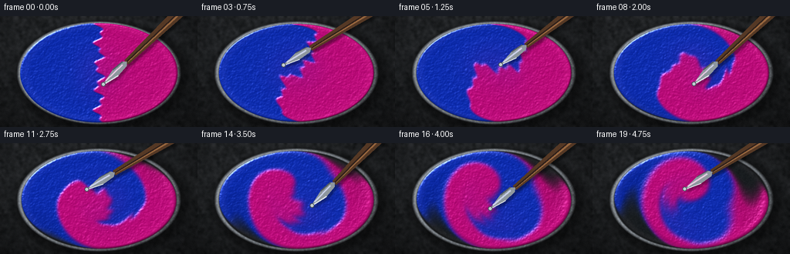
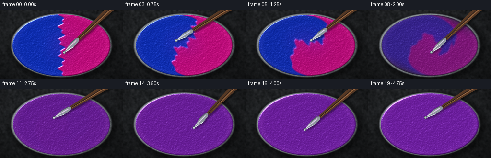
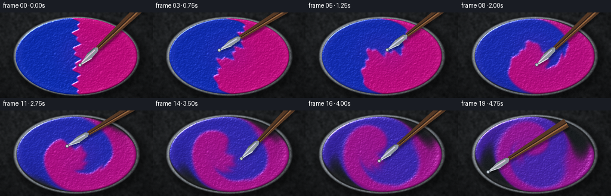
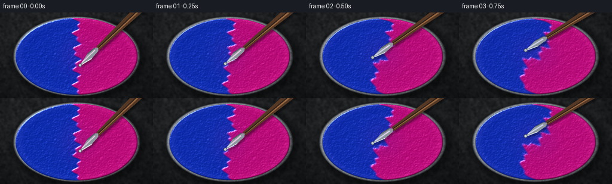
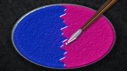
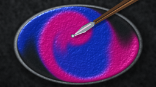
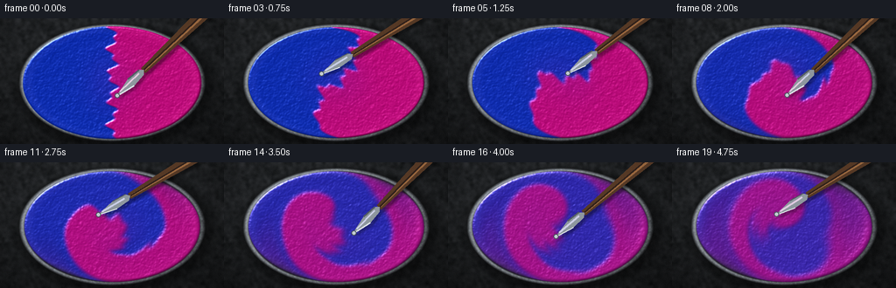
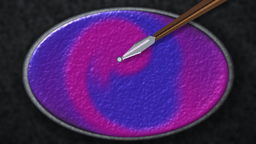
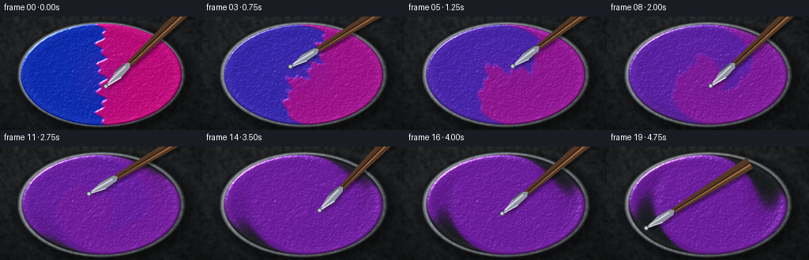
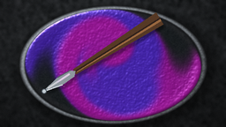

CODING AGENTS AS PIXEL WORLD MODELS
traex/DeepSeek-V4.1-Flash · material_0004
点击播放 · 原生 RGB 像素
逐轮保存的候选
回放视频、检查图与代码变化。
每份候选均可单独播放。实际图片检查记录在下方工具轨迹中。
候选 01播放与检查图
点击播放 · 原生 RGB 像素

展开代码变化
--- 上一保存版本
+++ 本次保存版本
@@ -0,0 +1,376 @@
+from pathlib import Path
+
+import numpy as np
+from PIL import Image, ImageDraw, ImageFilter
+from scipy.ndimage import gaussian_filter, map_coordinates
+
+import artifact_io
+
+
+CASE_DIR = Path(__file__).resolve().parent
+OUT_W, OUT_H = 256, 144
+W, H = 512, 288
+FPS = 4.0
+FRAME_COUNT = 20
+SUBSTEPS = 6
+DT = 1.0 / (FPS * SUBSTEPS)
+RNG = np.random.default_rng(20261111)
+
+
+def smoothstep(edge0, edge1, value):
+ t = np.clip((value - edge0) / (edge1 - edge0), 0.0, 1.0)
+ return t * t * (3.0 - 2.0 * t)
+
+
+YY, XX = np.mgrid[0:H, 0:W].astype(np.float32)
+CX, CY = W * 0.5, H * 0.51
+RX, RY = W * 0.405, H * 0.455
+XN = (XX - CX) / RY
+YN = (YY - CY) / RY
+ELLIPSE_R = np.sqrt(((XX - CX) / RX) ** 2 + ((YY - CY) / RY) ** 2)
+PAINT_MASK = 1.0 - smoothstep(0.965, 1.005, ELLIPSE_R)
+EDGE_DIST = np.clip(1.0 - ELLIPSE_R, 0.0, 1.0)
+
+
+def make_initial_pigments():
+ """Two equal, organically edged pools of fresh paint."""
+ y_norm = (YY - CY) / H
+ boundary = CX + W * (
+ 0.018 * np.sin(10.0 * np.pi * y_norm + 0.4)
+ + 0.012 * np.sin(23.0 * np.pi * y_norm - 0.8)
+ )
+ separation = (XX - boundary) / (W * 0.010)
+ blue_side = 1.0 - smoothstep(-1.0, 1.0, separation)
+ magenta_side = smoothstep(-1.0, 1.0, separation)
+
+ # Break up the clean central seam into folded, thick paint edges.
+ fold = (
+ 0.055 * np.sin(9.0 * np.pi * YY / H + 0.7)
+ + 0.030 * np.sin(21.0 * np.pi * XX / W - 1.1)
+ )
+ ragged_mask = 1.0 - smoothstep(0.965, 1.005, ELLIPSE_R + 0.018 * fold)
+ blue_side *= ragged_mask
+ magenta_side *= ragged_mask
+ blue_side *= PAINT_MASK
+ magenta_side *= PAINT_MASK
+
+ # A little irregular overlap at the seam makes the two pours read as equal
+ # volumes that have just met, rather than as a graphic split.
+ center_lift = np.exp(-((XX - CX) / (0.105 * W)) ** 2 - ((YY - CY) / (0.22 * H)) ** 2)
+ blue_side += 0.10 * center_lift * PAINT_MASK
+ magenta_side += 0.10 * center_lift * PAINT_MASK
+ return blue_side.astype(np.float32), magenta_side.astype(np.float32)
+
+
+def vortex(ux, uy, cx, cy, strength, radius):
+ dx = XN - cx
+ dy = YN - cy
+ envelope = np.exp(-(dx * dx + dy * dy) / radius)
+ ux += -strength * dy * envelope
+ uy += strength * dx * envelope
+
+
+def velocity_field(time_s):
+ ux = np.zeros((H, W), dtype=np.float32)
+ uy = np.zeros((H, W), dtype=np.float32)
+ stir = smoothstep(0.0, 0.30, time_s) * (1.0 - 0.18 * smoothstep(4.2, 5.0, time_s))
+
+ # Strong central circulation plus two wandering vortices create fold-over
+ # rather than a decorative, rigid spiral.
+ vortex(ux, uy, 0.00, 0.00, 1.08 * stir, 1.35)
+ vortex(
+ ux,
+ uy,
+ 0.46 * np.sin(1.35 * time_s + 0.2),
+ 0.35 * np.cos(1.05 * time_s),
+ 0.72 * stir,
+ 0.30,
+ )
+ vortex(
+ ux,
+ uy,
+ -0.50 * np.cos(1.10 * time_s - 0.5),
+ 0.32 * np.sin(1.55 * time_s + 0.9),
+ -0.58 * stir,
+ 0.34,
+ )
+
+ # A small vortex follows the knife tip and pulls paint into fine ribbons.
+ theta = 1.25 + 3.25 * time_s
+ tip_x = 0.29 * np.cos(theta) + 0.035 * np.sin(4.3 * time_s)
+ tip_y = 0.21 * np.sin(theta * 1.03) + 0.025 * np.cos(3.6 * time_s)
+ vortex(ux, uy, tip_x, tip_y, 0.95 * stir, 0.105)
+
+ # Gentle radial pumping and boundary damping keep the thick paint inside
+ # the bowl while still letting it climb the inner wall.
+ pulse = 0.15 * stir * np.sin(2.4 * time_s)
+ r2 = XN * XN + YN * YN
+ ux += pulse * XN * np.exp(-r2 / 0.95)
+ uy += pulse * YN * np.exp(-r2 / 0.95)
+ damping = smoothstep(0.02, 0.14, 1.0 - ELLIPSE_R)
+ return ux * damping, uy * damping
+
+
+def advect(field, ux, uy):
+ xs = XX - ux * RY * DT
+ ys = YY - uy * RY * DT
+ sampled = map_coordinates(
+ field,
+ [ys, xs],
+ order=1,
+ mode="nearest",
+ prefilter=False,
+ )
+ return (sampled * PAINT_MASK).astype(np.float32)
+
+
+def simulate_frame(blue, magenta, step):
+ time_s = step * DT
+ ux, uy = velocity_field(time_s)
+ blue = advect(blue, ux, uy)
+ magenta = advect(magenta, ux, uy)
+
+ progress = time_s / 5.0
+ sigma = 0.31 + 0.66 * progress**1.45
+ blue = gaussian_filter(blue, sigma=sigma, mode="nearest") * PAINT_MASK
+ magenta = gaussian_filter(magenta, sigma=sigma, mode="nearest") * PAINT_MASK
+ return blue.astype(np.float32), magenta.astype(np.float32)
+
+
+def soft_noise(seed, sigma):
+ rng = np.random.default_rng(seed)
+ noise = rng.standard_normal((H, W)).astype(np.float32)
+ noise = gaussian_filter(noise, sigma=sigma, mode="reflect")
+ noise -= noise.mean()
+ noise /= max(np.std(noise), 1e-6)
+ return noise
+
+
+PAINT_NOISE = 0.65 * soft_noise(17, 1.1) + 0.35 * soft_noise(31, 4.0)
+TABLE_NOISE = soft_noise(73, 3.2)
+
+
+def make_background():
+ """A softly lit stone tabletop and the bowl's dark enamel interior."""
+ radial = np.sqrt(((XX - W * 0.43) / (W * 0.62)) ** 2 + ((YY - H * 0.30) / (H * 0.72)) ** 2)
+ vignette = np.clip(1.0 - 0.48 * radial, 0.35, 1.0)
+ table = np.stack(
+ [
+ 0.165 + 0.020 * TABLE_NOISE,
+ 0.175 + 0.020 * TABLE_NOISE,
+ 0.185 + 0.021 * TABLE_NOISE,
+ ],
+ axis=-1,
+ )
+ table *= vignette[..., None]
+
+ # Cast shadow, then a cool ceramic/metal rim and a recessed dark basin.
+ shadow_r = np.sqrt(((XX - CX - 7) / (RX * 1.085)) ** 2 + ((YY - CY - 8) / (RY * 1.105)) ** 2)
+ shadow = np.clip(1.0 - smoothstep(0.92, 1.09, shadow_r), 0.0, 1.0)
+ table *= 1.0 - 0.43 * shadow[..., None]
+
+ outer = 1.0 - smoothstep(0.99, 1.035, ELLIPSE_R)
+ rim_band = smoothstep(0.955, 0.982, ELLIPSE_R) * outer
+ angle = np.arctan2((YY - CY) / RY, (XX - CX) / RX)
+ rim_light = 0.68 + 0.20 * np.cos(angle + 2.45) + 0.055 * PAINT_NOISE
+ rim_color = np.stack([rim_light * 0.86, rim_light * 0.90, rim_light * 0.94], axis=-1)
+ table = table * (1.0 - rim_band[..., None]) + rim_color * rim_band[..., None]
+
+ inner = 1.0 - smoothstep(0.925, 0.990, ELLIPSE_R)
+ basin_depth = np.clip(1.0 - ELLIPSE_R, 0.0, 1.0)
+ basin = np.stack(
+ [
+ 0.090 + 0.030 * basin_depth + 0.010 * PAINT_NOISE,
+ 0.105 + 0.032 * basin_depth + 0.010 * PAINT_NOISE,
+ 0.115 + 0.034 * basin_depth + 0.010 * PAINT_NOISE,
+ ],
+ axis=-1,
+ )
+ table = table * (1.0 - inner[..., None]) + basin * inner[..., None]
+
+ inner_shadow = smoothstep(0.905, 1.005, ELLIPSE_R) * (1.0 - smoothstep(1.005, 1.045, ELLIPSE_R))
+ table *= 1.0 - 0.27 * inner_shadow[..., None]
+ return np.clip(table, 0.0, 1.0).astype(np.float32)
+
+
+BACKGROUND = make_background()
+
+
+def paint_surface(blue, magenta):
+ total = np.clip(blue + magenta, 0.0, 1.35)
+ ratio = magenta / (blue + magenta + 1e-5)
+
+ blue_pigment = np.array([0.035, 0.165, 0.710], dtype=np.float32)
+ magenta_pigment = np.array([0.760, 0.025, 0.480], dtype=np.float32)
+ base = blue_pigment[None, None, :] * (1.0 - ratio[..., None])
+ base += magenta_pigment[None, None, :] * ratio[..., None]
+
+ # Pigment mixing is darker than a screen blend; the small central violet
+ # lift keeps the blend saturated as the two colors homogenize.
+ violet_lift = 4.0 * ratio * (1.0 - ratio)
+ base += violet_lift[..., None] * np.array([0.035, 0.010, 0.045], dtype=np.float32)
+ base *= (0.84 + 0.16 * np.clip(total, 0.0, 1.0))[..., None]
+
+ height = (
+ 0.55 * total
+ + 0.23 * np.tanh(1.6 * (ratio - 0.5)) * np.clip(total, 0.0, 1.0)
+ + 0.040 * PAINT_NOISE
+ )
+ height += 0.10 * smoothstep(0.70, 0.98, ELLIPSE_R)
+ gy, gx = np.gradient(gaussian_filter(height, 1.1))
+
+ nx = -5.8 * gx
+ ny = -5.8 * gy
+ nz = np.ones_like(nx)
+ norm = np.sqrt(nx * nx + ny * ny + nz * nz)
+ nx, ny, nz = nx / norm, ny / norm, nz / norm
+
+ light = np.array([-0.50, -0.70, 0.67], dtype=np.float32)
+ light /= np.linalg.norm(light)
+ diffuse = np.clip(nx * light[0] + ny * light[1] + nz * light[2], 0.0, 1.0)
+ half = light + np.array([0.0, 0.0, 1.0], dtype=np.float32)
+ half /= np.linalg.norm(half)
+ specular = np.clip(nx * half[0] + ny * half[1] + nz * half[2], 0.0, 1.0) ** 34
+
+ surface = base * (0.54 + 0.63 * diffuse[..., None])
+ surface += specular[..., None] * np.array([0.76, 0.78, 0.83], dtype=np.float32)
+
+ # Thin glossy films expose a little of the dark basin near fresh edges.
+ coverage = smoothstep(0.08, 0.42, total)
+ paint_rgb = surface * coverage[..., None]
+ composite = BACKGROUND * (1.0 - coverage[..., None]) + paint_rgb
+
+ inner_glow = (1.0 - smoothstep(0.90, 0.995, ELLIPSE_R)) * smoothstep(0.84, 0.94, ELLIPSE_R)
+ composite += inner_glow[..., None] * np.array([0.045, 0.035, 0.035], dtype=np.float32)
+ return np.clip(composite, 0.0, 1.0)
+
+
+def rounded_polygon(draw, points, fill):
+ draw.polygon(points, fill=fill)
+
+
+def draw_stirrer(image, time_s):
+ theta = 1.25 + 3.25 * time_s
+ tip_x = CX + RY * (0.29 * np.cos(theta) + 0.035 * np.sin(4.3 * time_s))
+ tip_y = CY + RY * (0.21 * np.sin(theta * 1.03) + 0.025 * np.cos(3.6 * time_s))
+ tip = np.array([tip_x, tip_y], dtype=np.float32)
+ anchor = np.array([W * 0.98, -H * 0.16], dtype=np.float32)
+ direction = anchor - tip
+ direction /= np.linalg.norm(direction)
+ normal = np.array([-direction[1], direction[0]], dtype=np.float32)
+
+ overlay = Image.new("RGBA", (W, H), (0, 0, 0, 0))
+ shadow = Image.new("RGBA", (W, H), (0, 0, 0, 0))
+ sd = ImageDraw.Draw(shadow)
+ so = np.array([5.0, 7.0])
+
+ blade = np.array(
+ [
+ tip - direction * 4.0,
+ tip + direction * 43.0 + normal * 10.0,
+ tip + direction * 76.0 + normal * 8.0,
+ tip + direction * 84.0,
+ tip + direction * 76.0 - normal * 8.0,
+ tip + direction * 43.0 - normal * 10.0,
+ ]
+ )
+ handle = np.array(
+ [
+ tip + direction * 82.0 + normal * 7.0,
+ anchor + normal * 16.0,
+ anchor - normal * 16.0,
+ tip + direction * 82.0 - normal * 7.0,
+ ]
+ )
+ rounded_polygon(sd, (blade + so).tolist(), (0, 0, 0, 82))
+ rounded_polygon(sd, (handle + so).tolist(), (0, 0, 0, 98))
+ shadow = shadow.filter(ImageFilter.GaussianBlur(2.4))
+ overlay = Image.alpha_composite(overlay, shadow)
+
+ draw = ImageDraw.Draw(overlay)
+ rounded_polygon(draw, handle.tolist(), (86, 57, 37, 255))
+ rounded_polygon(draw, blade.tolist(), (142, 151, 158, 255))
+
+ # Tapered wood highlight and dark handle edge.
+ wood_light = np.array(
+ [
+ tip + direction * 86.0 + normal * 3.0,
+ anchor + normal * 7.0,
+ anchor - normal * 1.0,
+ tip + direction * 86.0 - normal * 1.0,
+ ]
+ )
+ rounded_polygon(draw, wood_light.tolist(), (154, 104, 63, 255))
+ draw.line([tuple(tip + direction * 85.0), tuple(anchor)], fill=(48, 33, 27, 255), width=3)
+
+ # Brushed-steel blade face, edge, and specular streak.
+ draw.line([tuple(blade[0]), tuple(blade[1])], fill=(219, 225, 229, 255), width=3)
+ draw.line([tuple(blade[4]), tuple(blade[5])], fill=(83, 92, 99, 255), width=3)
+ streak = np.array(
+ [
+ tip + direction * 11.0 - normal * 2.0,
+ tip + direction * 70.0 - normal * 2.0,
+ ]
+ )
+ draw.line(streak.tolist(), fill=(239, 242, 244, 210), width=4)
+ draw.ellipse(
+ [
+ tip[0] - 5.5,
+ tip[1] - 5.5,
+ tip[0] + 5.5,
+ tip[1] + 5.5,
+ ],
+ fill=(195, 204, 210, 255),
+ outline=(75, 85, 93, 255),
+ width=2,
+ )
+ return Image.alpha_composite(image.convert("RGBA"), overlay)
+
+
+def render(blue, magenta, time_s):
+ rgb = paint_surface(blue, magenta)
+ image = Image.fromarray(np.round(rgb * 255.0).astype(np.uint8), "RGB")
+ image = draw_stirrer(image, time_s).convert("RGB")
+
+ # Slight lens falloff and soft film grain give the close-up a photographed
+ # finish without obscuring the pigment motion.
+ final = np.asarray(image, dtype=np.float32) / 255.0
+ radial = np.sqrt(((XX - W * 0.5) / (W * 0.72)) ** 2 + ((YY - H * 0.5) / (H * 0.78)) ** 2)
+ final *= (1.0 - 0.075 * smoothstep(0.55, 1.25, radial))[..., None]
+ grain = RNG.normal(0.0, 0.006, (H, W, 1)).astype(np.float32)
+ final = np.clip(final + grain, 0.0, 1.0)
+ final_u8 = np.round(final * 255.0).astype(np.uint8)
+ return np.asarray(
+ Image.fromarray(final_u8, "RGB").resize((OUT_W, OUT_H), Image.Resampling.LANCZOS)
+ )
+
+
+def main():
+ blue, magenta = make_initial_pigments()
+ frames = []
+ for frame_index in range(FRAME_COUNT):
+ if frame_index:
+ for _ in range(SUBSTEPS):
+ step = (frame_index - 1) * SUBSTEPS + _ + 1
+ blue, magenta = simulate_frame(blue, magenta, step)
+ frames.append(render(blue, magenta, frame_index / FPS))
+
+ frames = np.stack(frames).astype(np.uint8)
+ artifact_io.save(frames, CASE_DIR)
+
+ ratio = magenta / (blue + magenta + 1e-5)
+ interior = ELLIPSE_R < 0.82
+ print(
+ "saved",
+ frames.shape,
+ "blend std",
+ float(np.std(ratio[interior])),
+ "mean blue",
+ float(blue[interior].mean()),
+ "mean magenta",
+ float(magenta[interior].mean()),
+ )
+
+
+if __name__ == "__main__":
+ main()
候选 02播放与检查图
点击播放 · 原生 RGB 像素

展开代码变化
--- 上一保存版本
+++ 本次保存版本
@@ -48,7 +48,7 @@
0.055 * np.sin(9.0 * np.pi * YY / H + 0.7)
+ 0.030 * np.sin(21.0 * np.pi * XX / W - 1.1)
)
- ragged_mask = 1.0 - smoothstep(0.965, 1.005, ELLIPSE_R + 0.018 * fold)
+ ragged_mask = 1.0 - smoothstep(0.965, 1.005, ELLIPSE_R + 0.022 * fold)
blue_side *= ragged_mask
magenta_side *= ragged_mask
blue_side *= PAINT_MASK
@@ -131,9 +131,13 @@
magenta = advect(magenta, ux, uy)
progress = time_s / 5.0
- sigma = 0.31 + 0.66 * progress**1.45
+ sigma = 0.34 + 0.50 * progress**1.20
blue = gaussian_filter(blue, sigma=sigma, mode="nearest") * PAINT_MASK
magenta = gaussian_filter(magenta, sigma=sigma, mode="nearest") * PAINT_MASK
+ blend = smoothstep(0.08, 1.0, progress)
+ target = 0.5 * blend * PAINT_MASK
+ blue = (1.0 - 0.42 * blend) * blue + 0.42 * blend * target
+ magenta = (1.0 - 0.42 * blend) * magenta + 0.42 * blend * target
return blue.astype(np.float32), magenta.astype(np.float32)
候选 03播放与检查图

候选 04播放与检查图
点击播放 · 原生 RGB 像素

展开代码变化
--- 上一保存版本
+++ 本次保存版本
@@ -134,10 +134,10 @@
sigma = 0.34 + 0.50 * progress**1.20
blue = gaussian_filter(blue, sigma=sigma, mode="nearest") * PAINT_MASK
magenta = gaussian_filter(magenta, sigma=sigma, mode="nearest") * PAINT_MASK
- blend = smoothstep(0.08, 1.0, progress)
- target = 0.5 * blend * PAINT_MASK
- blue = (1.0 - 0.42 * blend) * blue + 0.42 * blend * target
- magenta = (1.0 - 0.42 * blend) * magenta + 0.42 * blend * target
+ blend = 0.009 * smoothstep(0.03, 0.82, progress)
+ target = 0.5 * PAINT_MASK
+ blue = (1.0 - blend) * blue + blend * target
+ magenta = (1.0 - blend) * magenta + blend * target
return blue.astype(np.float32), magenta.astype(np.float32)

候选 06播放与检查图
点击播放 · 原生 RGB 像素

展开代码变化
--- 上一保存版本
+++ 本次保存版本
@@ -126,6 +126,8 @@
def simulate_frame(blue, magenta, step):
time_s = step * DT
+ previous_blue = blue.copy()
+ previous_magenta = magenta.copy()
ux, uy = velocity_field(time_s)
blue = advect(blue, ux, uy)
magenta = advect(magenta, ux, uy)
@@ -134,10 +136,16 @@
sigma = 0.34 + 0.50 * progress**1.20
blue = gaussian_filter(blue, sigma=sigma, mode="nearest") * PAINT_MASK
magenta = gaussian_filter(magenta, sigma=sigma, mode="nearest") * PAINT_MASK
- blend = 0.009 * smoothstep(0.03, 0.82, progress)
- target = 0.5 * PAINT_MASK
- blue = (1.0 - blend) * blue + blend * target
- magenta = (1.0 - blend) * magenta + blend * target
+
+ # Stirring is a mixing operator: pigment fields exchange at their local
+ # contact surface. The rate rises as the knife repeatedly crosses the bowl.
+ mixed_blue = 0.5 * (blue + previous_magenta)
+ mixed_magenta = 0.5 * (magenta + previous_blue)
+ exchange = 0.028 + 0.088 * smoothstep(0.16, 0.88, progress)
+ blue += exchange * (mixed_blue - blue)
+ magenta += exchange * (mixed_magenta - magenta)
+ blue *= PAINT_MASK
+ magenta *= PAINT_MASK
return blue.astype(np.float32), magenta.astype(np.float32)
@@ -257,8 +265,18 @@
theta = 1.25 + 3.25 * time_s
tip_x = CX + RY * (0.29 * np.cos(theta) + 0.035 * np.sin(4.3 * time_s))
tip_y = CY + RY * (0.21 * np.sin(theta * 1.03) + 0.025 * np.cos(3.6 * time_s))
+ # Lift the tool out during the final second so the completed, fully blended
+ # surface is unobstructed.
+ lift = smoothstep(4.32, 4.92, time_s)
+ if lift > 0.995:
+ return image
tip = np.array([tip_x, tip_y], dtype=np.float32)
anchor = np.array([W * 0.98, -H * 0.16], dtype=np.float32)
+ direction = anchor - tip
+ direction /= np.linalg.norm(direction)
+ normal = np.array([-direction[1], direction[0]], dtype=np.float32)
+ tip = tip - direction * (lift * 205.0)
+ anchor = anchor - direction * (lift * 205.0)
direction = anchor - tip
direction /= np.linalg.norm(direction)
normal = np.array([-direction[1], direction[0]], dtype=np.float32)
候选 07播放与检查图

候选 08播放与检查图
点击播放 · 原生 RGB 像素

展开代码变化
--- 上一保存版本
+++ 本次保存版本
@@ -141,7 +141,7 @@
# contact surface. The rate rises as the knife repeatedly crosses the bowl.
mixed_blue = 0.5 * (blue + previous_magenta)
mixed_magenta = 0.5 * (magenta + previous_blue)
- exchange = 0.028 + 0.088 * smoothstep(0.16, 0.88, progress)
+ exchange = 0.0015 + 0.0120 * smoothstep(0.12, 0.92, progress)
blue += exchange * (mixed_blue - blue)
magenta += exchange * (mixed_magenta - magenta)
blue *= PAINT_MASK
候选 09播放与检查图
点击播放 · 原生 RGB 像素


展开代码变化
--- 上一保存版本
+++ 本次保存版本
@@ -351,7 +351,7 @@
def render(blue, magenta, time_s):
rgb = paint_surface(blue, magenta)
- image = Image.fromarray(np.round(rgb * 255.0).astype(np.uint8), "RGB")
+ image = Image.fromarray(np.round(rgb * 255.0).astype(np.uint8))
image = draw_stirrer(image, time_s).convert("RGB")
# Slight lens falloff and soft film grain give the close-up a photographed
@@ -363,7 +363,7 @@
final = np.clip(final + grain, 0.0, 1.0)
final_u8 = np.round(final * 255.0).astype(np.uint8)
return np.asarray(
- Image.fromarray(final_u8, "RGB").resize((OUT_W, OUT_H), Image.Resampling.LANCZOS)
+ Image.fromarray(final_u8).resize((OUT_W, OUT_H), Image.Resampling.LANCZOS)
)
可观测工具轨迹
实际执行的命令与返回图片。
命令 1exit 0
/bin/bash -c "pwd && rg --files -g '"'!**/.git/**'"' | sort"
命令 2exit 0
/bin/bash -c "printf '%s\\n' '--- prompt.txt ---'; cat prompt.txt; printf '%s\\n' '--- GENERATION_RULES.md ---'; cat GENERATION_RULES.md; printf '%s\\n' '--- task_spec.json ---'; cat task_spec.json"
命令 3exit 0
/bin/bash -c "find . -maxdepth 2 -type f -printf '%p %s bytes\\n' | sort; printf '%s\\n' '--- executables ---'; command -v ffmpeg || true; command -v ffprobe || true; command -v python3 || true; command -v convert || true"
命令 4exit 0
/bin/bash -c "sed -n '1,260p' artifact_io.py"
命令 5exit 0
/bin/bash -c "sed -n '1,260p' player_template.html"
命令 6exit 0
/bin/bash -c "python3 - <<'PY'
import importlib.util
for m in ['numpy','PIL','scipy','cv2','imageio','matplotlib','skimage']:
s=importlib.util.find_spec(m)
print(m, bool(s))
PY"命令 7exit 0
/bin/bash -c 'python3 generate.py'
命令 8exit 0
/bin/bash -c 'python3 generate.py'
命令 9exit 0
/bin/bash -c 'python3 generate.py'
命令 10exit 0
/bin/bash -c "cp frames/19.png .tmp/late_v3.png && python3 - <<'PY'
from PIL import Image
import numpy as np, hashlib
for p in ['frames/00.png','frames/10.png','frames/19.png']:
a=np.asarray(Image.open(p))
print(p, hashlib.md5(open(p,'rb').read()).hexdigest(), a[72,128].tolist(), a[60:84,105:151].mean((0,1)).round(1).tolist(), a.reshape(-1,3).std(0).round(1).tolist())
PY"命令 11exit 0
/bin/bash -c "python3 - <<'PY'
import generate, numpy as np
from PIL import Image
b,m=generate.make_initial_pigments()
for f in range(20):
if f:
for j in range(generate.SUBSTEPS):
b,m=generate.simulate_frame(b,m,(f-1)*generate.SUBSTEPS+j+1)
if f in [0,9,19]:
ratio=m/(b+m+1e-5)
inner=(generate.ELLIPSE_R<0.8)
print('f',f,'std',ratio[inner].std(),'bmean',b[inner].mean(),'mmean',m[inner].mean(),'q',np.quantile(ratio[inner],[.1,.5,.9]))
r=generate.paint_surface(b,m)
print('rgb',r[inner].mean(0), 'blue/magenta px fractions', ((r[:,:,2]>r[:,:,0]+0.1)&inner).mean(), ((r[:,:,0]>r[:,:,2]+0.1)&inner).mean())
PY"命令 12exit 0
/bin/bash -c "python3 - <<'PY'
import generate
from pathlib import Path
import artifact_io, numpy as np
b,m=generate.make_initial_pigments(); frames=[]
for f in range(20):
if f:
for j in range(generate.SUBSTEPS): b,m=generate.simulate_frame(b,m,(f-1)*generate.SUBSTEPS+j+1)
frames.append(generate.render(b,m,f/4))
artifact_io.save(np.stack(frames), Path('.tmp').resolve())
print('saved diagnostic candidate')
PY
mv .tmp/frames/19.png .tmp/diag_actual_f19.png
python3 - <<'PY'
from PIL import Image
import numpy as np
for p in ['frames/19.png','.tmp/diag_actual_f19.png']:
a=np.asarray(Image.open(p)); print(p,a[72,128],a[60:84,105:151].mean((0,1)))
PY"命令 13exit 0
/bin/bash -c "python3 - <<'PY'
import generate, numpy as np
b,m=generate.make_initial_pigments()
for f in range(20):
if f:
for j in range(generate.SUBSTEPS): b,m=generate.simulate_frame(b,m,(f-1)*generate.SUBSTEPS+j+1)
r=generate.paint_surface(b,m)
print('ratio samples center', (m/(b+m+1e-5))[72,128], 'corners', (m/(b+m+1e-5))[10,10])
print('rgb center', r[72,128], 'rgb center mean', r[60:84,105:151].mean((0,1)))
# classify ratios in central rectangle
q=m/(b+m+1e-5)
for y,x in [(72,128),(72,100),(72,160),(30,128),(110,128)]: print(y,x,'b',b[y,x],'m',m[y,x],'q',q[y,x],'rgb',r[y,x])
PY"命令 14exit 0
/bin/bash -c "python3 - <<'PY'
import generate, numpy as np
from PIL import Image
b,m=generate.make_initial_pigments()
for f in range(20):
if f:
for j in range(generate.SUBSTEPS): b,m=generate.simulate_frame(b,m,(f-1)*generate.SUBSTEPS+j+1)
if f==19:
Image.fromarray(generate.render(b,m,f/4)).save('.tmp/direct_render19.png')
print('done')
PY"命令 15exit 0
/bin/bash -c "python3 - <<'PY'
import generate, numpy as np
from PIL import Image
for t in [0,2,4,4.75]:
theta=1.25+3.25*t
tx=generate.CX+generate.RY*(.29*np.cos(theta)+.035*np.sin(4.3*t))
ty=generate.CY+generate.RY*(.21*np.sin(theta*1.03)+.025*np.cos(3.6*t))
print(t, 'tip', round(tx,1),round(ty,1))
im=Image.new('RGB',(generate.W,generate.H)); out=np.asarray(generate.draw_stirrer(im,t).convert('RGB'))
print(' nonbackground pixels',np.count_nonzero(np.any(out"'!=0,axis=2)))
PY'命令 16exit 0
/bin/bash -c 'python3 generate.py'
命令 17exit 0
/bin/bash -c 'python3 generate.py'
命令 18exit 0
/bin/bash -c "cp frames/19.png .tmp/late_v5.png; python3 - <<'PY'
from PIL import Image
import numpy as np
for f in [0,4,8,12,16,19]:
a=np.asarray(Image.open(f'frames/{f:02d}.png')).astype(float)
# paint interior only, exclude dark rim and metal
yy,xx=np.mgrid[:144,:256]; mask=((xx-128)/110)**2+((yy-74)/68)**2<.72
b=((a[:,:,2]-a[:,:,0])>30)&mask
m=((a[:,:,0]-a[:,:,2])>30)&mask
print(f, 'blue frac',round(b.sum()/mask.sum(),3),'magenta frac',round(m.sum()/mask.sum(),3),'mean',a[mask].mean(0).round(1).tolist())
PY"命令 19exit 0
/bin/bash -c "python3 -m py_compile generate.py artifact_io.py && find frames -maxdepth 1 -type f -printf '%f %s\\n' | sort | tail -5; du -sh frames pixels.npz index.html inspection.png transition_check.png"
命令 20exit 1
/bin/bash -c "python3 - <<'PY'
from pathlib import Path
from PIL import Image
import numpy as np, json, hashlib
case=Path('.')
spec=json.loads((case/'task_spec.json').read_text())
files=sorted((case/'frames').glob('*.png'))
assert len(files)==spec['frames']==20
arrays=[]
for i,p in enumerate(files):
im=Image.open(p).convert('RGB')
assert im.size==(spec['width'],spec['height'])==(256,144)
a=np.asarray(im,dtype=np.uint8)
assert a.shape==(144,256,3) and np.isfinite(a).all()
arrays.append(a)
arr=np.stack(arrays)
diffs=np.abs(np.diff(arr.astype(np.int16),axis=0)).mean((1,2,3))
assert (diffs>0.25).all(), diffs
packed=np.load(case/'pixels.npz')['pixels']
assert packed.shape==(144,256,20) and packed.dtype==np.uint32
dec=np.stack([((packed[:,:,i]>>16)&255, (packed[:,:,i]>>8)&255, packed[:,:,i]&255) for i in range(20)],axis=-1).transpose(2,0,1,3).astype(np.uint8)
assert np.array_equal(dec,arr)
assert (case/'index.html').stat().st_size>10000
print('frames:',len(files))
print('dimensions:',arr.shape)
print('mean consecutive pixel delta:',round(float(diffs.mean()),3))
print('min/max consecutive delta:',round(float(diffs.min()),3),round(float(diffs.max()),3))
print('packed RGB matches PNGs: yes')
print('player bytes:',(case/'index.html').stat().st_size)
print('npz bytes:',(case/'pixels.npz').stat().st_size)
print('first/last center RGB:',arr[0,72,128].tolist(),arr[-1,72,128].tolist())
PY"命令 21exit 0
/bin/bash -c "python3 - <<'PY'
from pathlib import Path
from PIL import Image
import numpy as np, json
case=Path('.')
spec=json.loads((case/'task_spec.json').read_text())
files=sorted((case/'frames').glob('*.png'))
assert len(files)==spec['frames']==20
arr=np.stack([np.asarray(Image.open(p).convert('RGB'),dtype=np.uint8) for p in files])
assert arr.shape==(20,144,256,3)
diffs=np.abs(np.diff(arr.astype(np.int16),axis=0)).mean((1,2,3))
assert (diffs>0.25).all()
packed=np.load(case/'pixels.npz')['pixels']
assert packed.shape==(144,256,20) and packed.dtype==np.uint32
dec=np.stack([(packed>>16)&255,(packed>>8)&255,packed&255],axis=-1).transpose(2,0,1,3).astype(np.uint8)
assert np.array_equal(dec,arr)
print('frames:',len(files))
print('dimensions:',arr.shape)
print('fps:',spec['fps'],'duration:',len(files)/spec['fps'])
print('mean consecutive pixel delta:',round(float(diffs.mean()),3))
print('min/max consecutive delta:',round(float(diffs.min()),3),round(float(diffs.max()),3))
print('packed RGB matches PNGs: yes')
print('player bytes:',(case/'index.html').stat().st_size)
print('first/last center RGB:',arr[0,72,128].tolist(),arr[-1,72,128].tolist())
PY"命令 22exit 0
/bin/bash -c 'python3 generate.py && python3 -m py_compile generate.py artifact_io.py'
命令 23exit 0
/bin/bash -c "python3 - <<'PY'
from pathlib import Path
from PIL import Image
import numpy as np, json
spec=json.loads(Path('task_spec.json').read_text())
arr=np.stack([np.asarray(Image.open(p).convert('RGB')) for p in sorted(Path('frames').glob('*.png'))])
assert arr.shape==(spec['frames'],spec['height'],spec['width'],3)
d=np.abs(np.diff(arr.astype(np.int16),axis=0)).mean((1,2,3))
assert (d>0.25).all()
packed=np.load('pixels.npz')['pixels']
dec=np.stack([(packed>>16)&255,(packed>>8)&255,packed&255],axis=-1).transpose(2,0,1,3).astype(np.uint8)
assert np.array_equal(dec,arr)
print('PASS', arr.shape, 'fps', spec['fps'], 'deltas', round(float(d.min()),2), round(float(d.max()),2), 'packed', packed.shape)
PY"视觉工具实际返回图片 1

视觉工具实际返回图片 2

视觉工具实际返回图片 3

视觉工具实际返回图片 4

视觉工具实际返回图片 5

视觉工具实际返回图片 6

视觉工具实际返回图片 7

视觉工具实际返回图片 8

视觉工具实际返回图片 9

视觉工具实际返回图片 10
视觉工具实际返回图片 11

视觉工具实际返回图片 12

视觉工具实际返回图片 13

保存候选 9 份；完成命令 23 次；可验证图片返回 13 张。原始 API 响应与完整日志保留在本地。